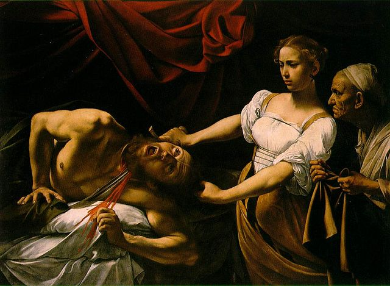
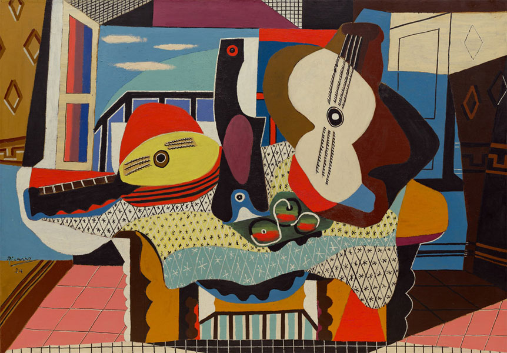
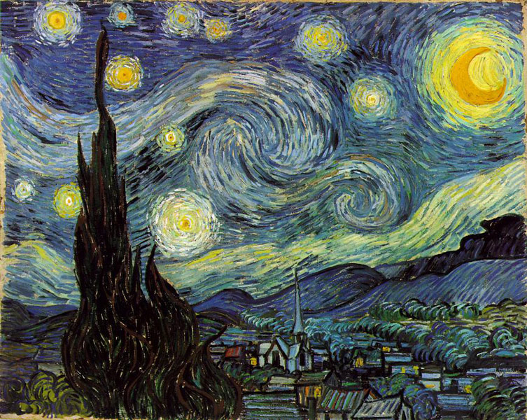
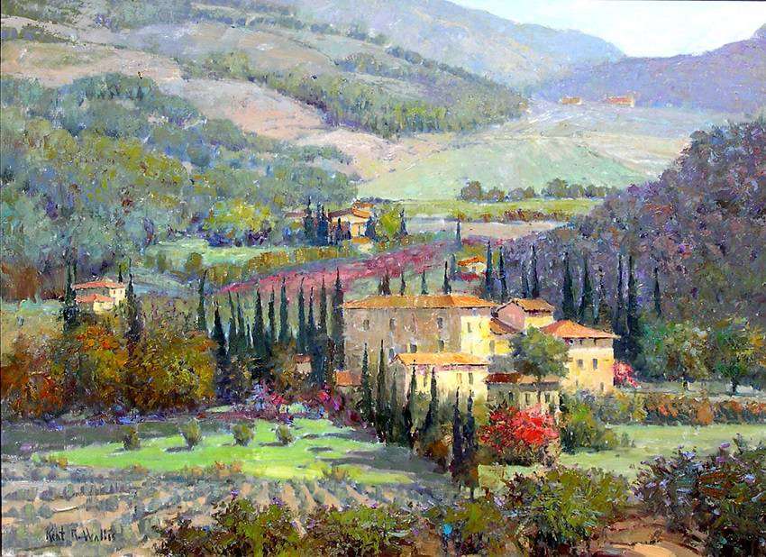
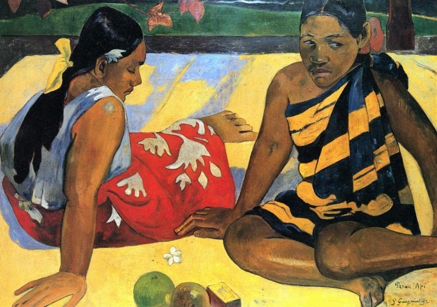
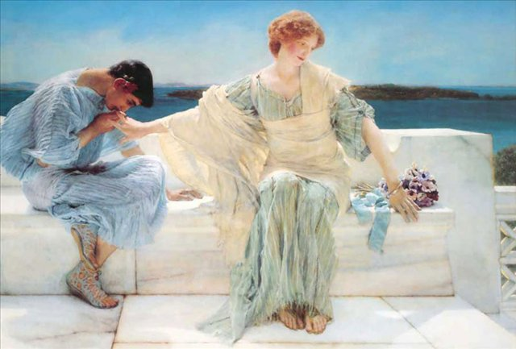
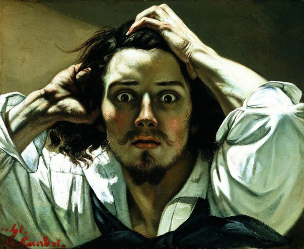
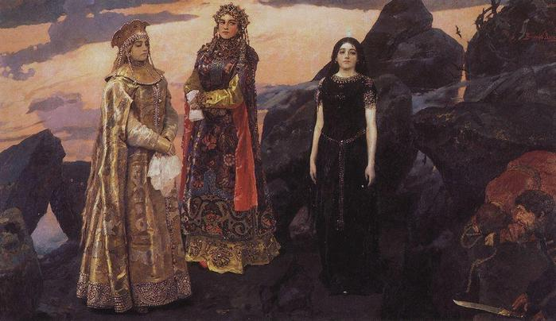
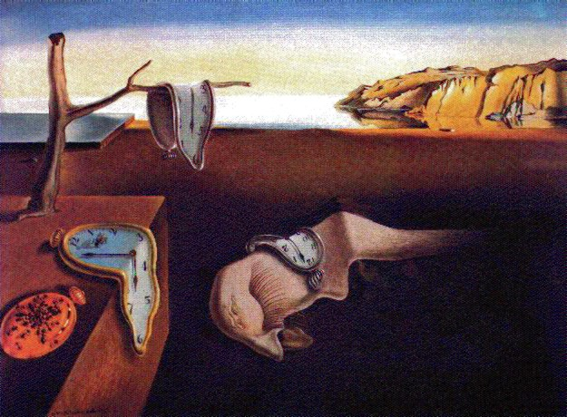
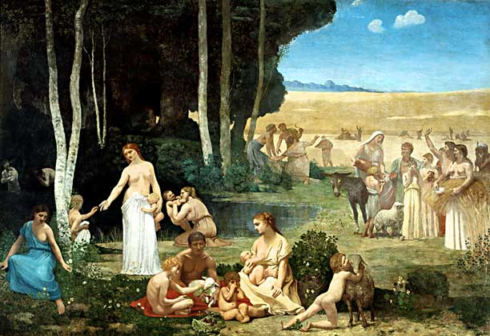

|

Микеланджело да Караваджо — Юдифь и Олоферн |

Пабло Пикассо - Мандолина и гитара |

Ван Гог - Звездная ночь |

Кент Уоллис - Ландшафт |
|

Поль Гоген - Две таитянки |

Лоуренс Альма-Тадема - Портрет графа А. С. Строганова |

Жан Дезире Гюстав Курбе — Отчаяние |

Виктор Васнецов - Три царевны подземного царства |
|

Сальвадор Дали - Расплывшееся время |

Пьер Пюви де Шаванн - Лето |